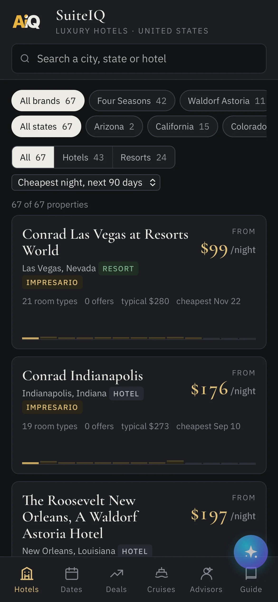
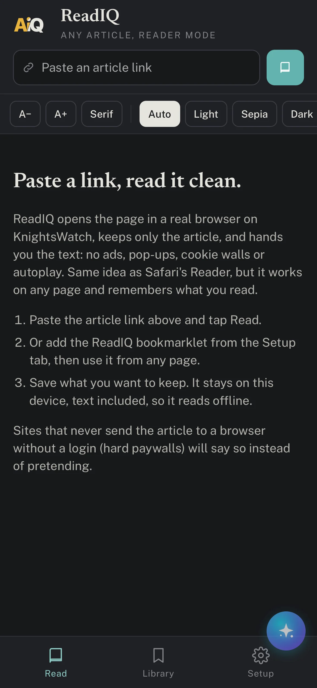
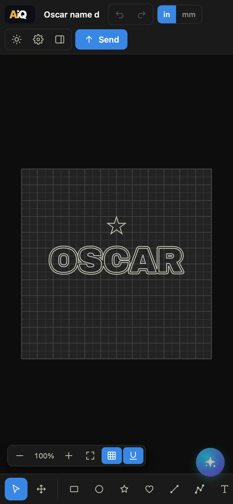
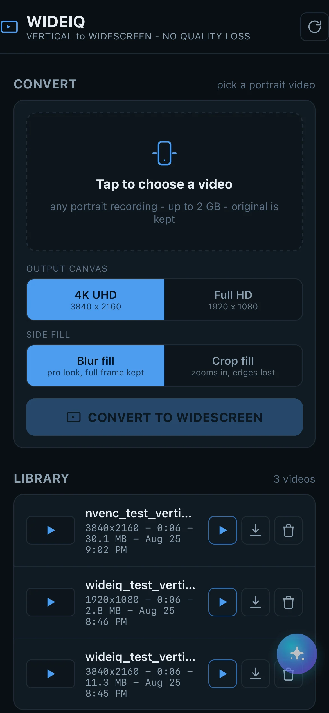

A
Q
Ai
Q
Manage
Home
Apps
SuiteIQ
TestFlight
Every luxury hotel and cruise, every date, one screen. Then book through your advisor for the perks.

ReadIQ: Article Reader
TestFlight
Paste a link, read it clean. Any article, reader mode, saved for later, read aloud.

CutIQ
TestFlight
A design studio for your Silhouette cutter, iPad first, with an AI copilot.

WideIQ
On the App Store
Vertical video, widescreen result. On your iPhone, no upload.
